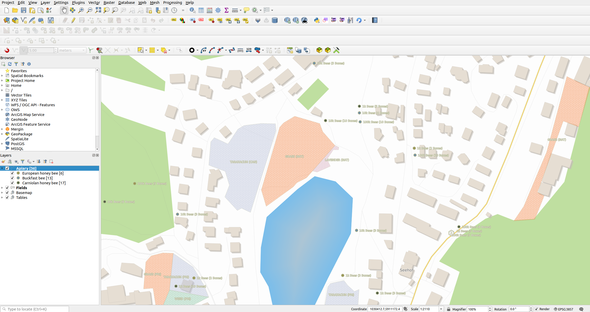
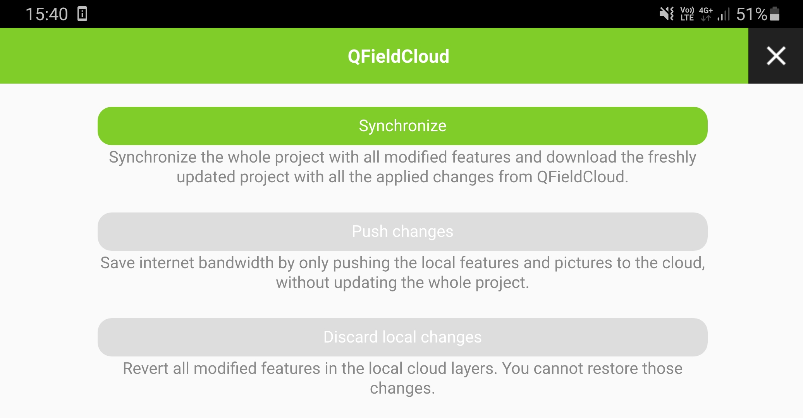
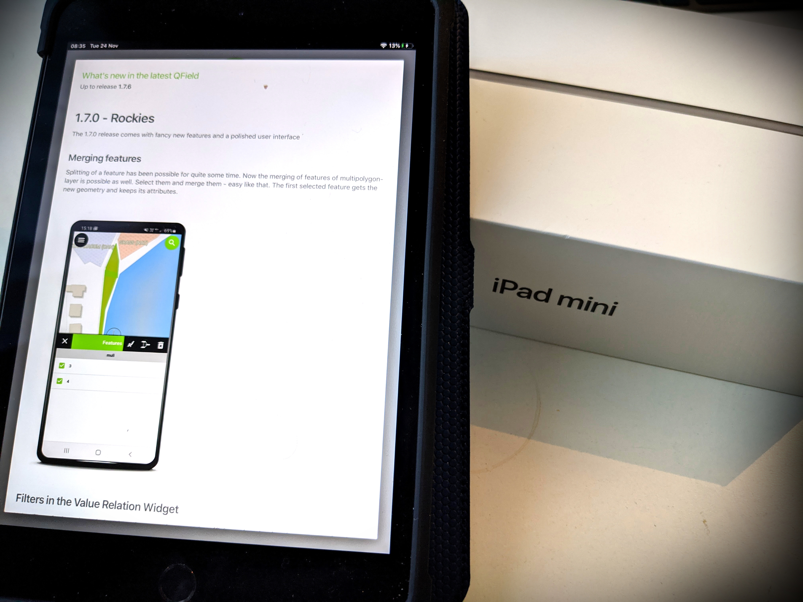
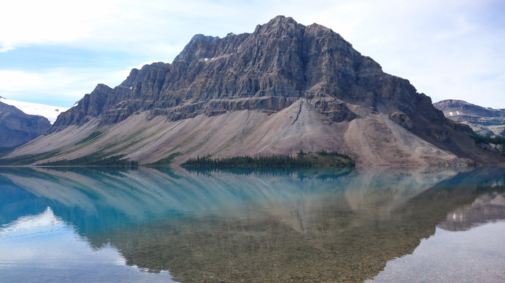

QField
Because data is outside
DAVID SIGNER @signedav
@OPENGISch
Senior Developer and Coordinator
@QGIS and @QFIELD

 Open source Geoninjas
Open source GeoninjasMade in Switzerland
 Why
Why QField?

Because
data is
outside the office
 What is
What is QField?


The
mobile data collection app for QGIS
 Minimalist UI
Minimalist UI
 Beautiful cartography
Beautiful cartography
 Powerful tools
Powerful tools
 Efficient interaction
Efficient interaction
 Beneficial integrations
Beneficial integrations
 Professional hardware
Professional hardware
 QFieldCloud
QFieldCloud
 How to work with
How to work with QField?
Comfortably prepare the work on your QGIS desktop
 Efficiently work on your GIS data outdoor
Efficiently work on your GIS data outdoorSeamlessly synchronise
 What is in
What is in QField?
 Powerful Feature Forms
Powerful Feature Forms Camera
Camera and
special widgets Multi Attribute Editing
Multi Attribute Editing Relation integration
Relation integration Mapthemes
Mapthemes Search
Search for
Attributes and
Coordinates Measuring tool
Measuring tool Geometry editing
Geometry editing GPS
GPS and
Tracking Print to PDF
Print to PDF Freehand
Freehand Drawing

>
 What about QFieldCloud?
What about QFieldCloud?

QField on iOS
1.7.6 Rockies
300k downloads
 Join the effort
Join the effort Your custom app
Your custom app